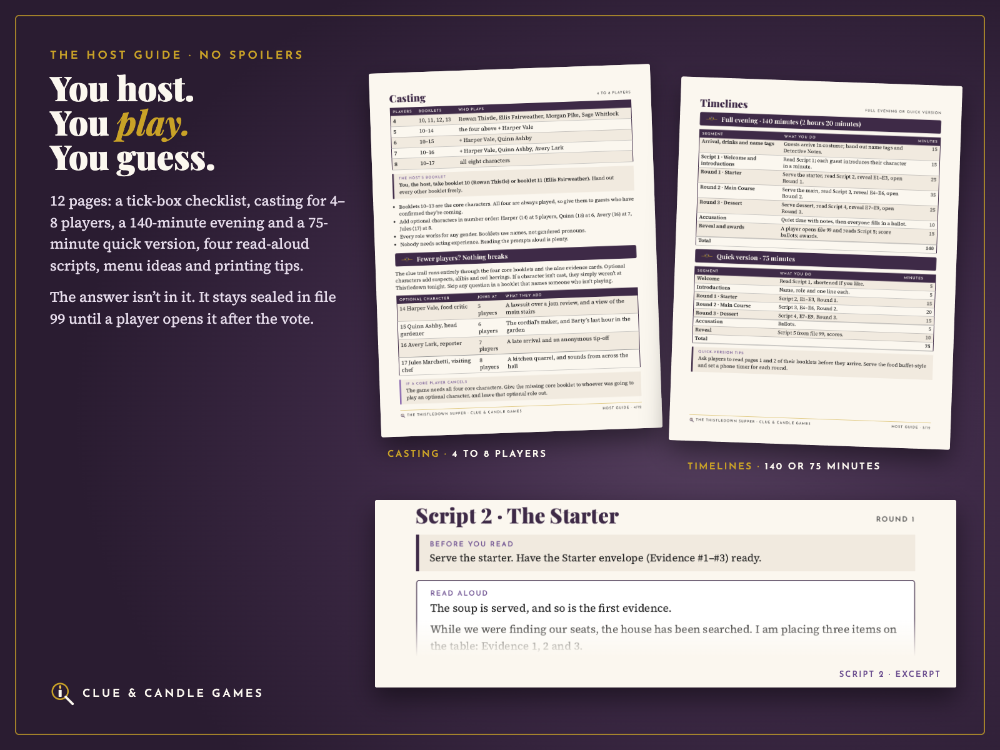
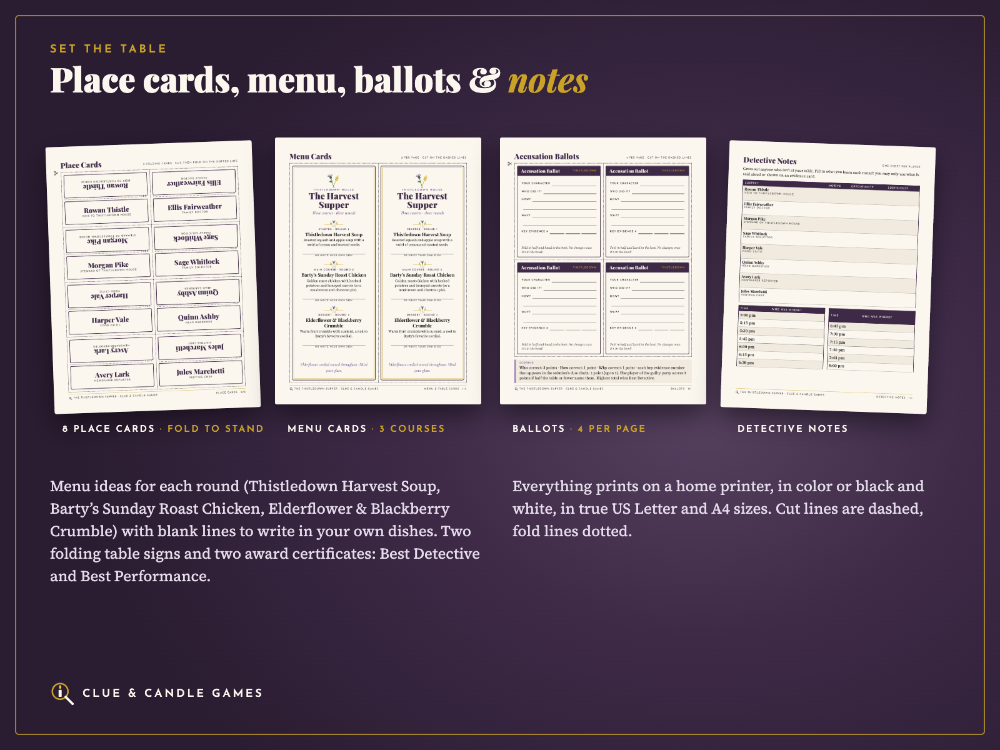

The Thistledown Supper: Dinner Party Murder Mystery for 4–8
A cozy 1930s country-house murder mystery you solve over three courses. Complete with just 4 players, and the host plays too. Printable PDF in US Letter and A4, from Clue & Candle Games, the party-games imprint of Hustle Studio.
↩️ 14-day no-questions refund. Email chenphien@gmail.com within 14 days of purchase and we'll refund you in full through Waffo to your original payment method. You don't need to give a reason (see Terms).
⭐ Satisfaction guarantee: if your party didn't go well, you get a full refund. Tell us within 14 days.
🔒 Secure checkout. Payment is handled by Waffo Pancake, our merchant of record. Waffo processes the payment, handles any sales tax or VAT that applies and emails you a receipt. We never see your card details.
📥 Instant digital download. Nothing is shipped, and there's no subscription.
Try before you buy: free mini mystery
The Case of the Cold Cocoa is a free 10-page printable mystery for 4–6 players (about 45 minutes) from the same team, in the same style: core and optional suspects, host scripts, evidence cards, ballots and a solution with its full clue chain. No email or signup needed. Play it first and judge our writing and fairness before you spend anything.
What The Thistledown Supper adds over the free one:
A full dinner-party game (about 2–2.5 hours with dinner, or a 75-minute quick version) instead of a 45-minute warm-up
8 separate 4-page character booklets, one round per course
A 12-page spoiler-free Host Guide, so the host plays and guesses too
A sealed 5-page solution with a 6-step clue chain and a "why not the other 7" table
Invitations, name tags, place cards, menu cards, table signs and award certificates
Every file in both US Letter and A4
Five reasons hosts pick it
Complete with just 4 players. The whole clue trail runs through the 4 core characters and the 9 evidence cards. Characters 5–8 join in number order and add suspects and red herrings without changing the story.
The host plays too. The 12-page Host Guide has no spoilers. You take booklet 10 or 11 like any guest, and the answer stays sealed in file 99 until a player opens it after everyone has voted.
One round per course. Starter, main course and dessert each bring three evidence cards and a new section of every booklet: things to share, two questions for named suspects and a small task.
Light reading. Each booklet is 4 pages, and every round's section is under 180 words.
A fair, provable answer. The solution walks through a 6-step clue chain. Every step names the evidence cards and booklet rounds it relies on, and a table explains why each of the other 7 suspects is in the clear.
Flip through the kit (video)
Look inside: real pages
Every picture below shows real pages from the PDFs. Nothing shown here gives away the answer; later evidence cards are blurred.
Evidence cards E1–E3 (starter); later cards blurred

Host Guide: casting, timelines and Script 2

Place cards, menu cards, ballots and detective notes
The story
Autumn, the 1930s. Bartholomew "Barty" Thistle, retired jam magnate, has invited a few old friends to the Harvest Supper at Thistledown House. Before the soup is served, Barty takes a glass of elderflower cordial in the study, sits down for a rest, and never wakes up: he is found dead in his armchair. The river has flooded the lane, so the Inspector can't arrive until morning. Everyone must stay, eat supper, and work out which guest at the table did it.
Your guests play the heir with a sinking bookshop, the village doctor, the steward who poured the glass and the family solicitor. With more guests, a food critic, the head gardener, a newspaper reporter and a visiting chef join in. Every character has a motive, a secret and something that looks bad. All eight names are gender-neutral, and the booklets refer to characters by name, so anyone can play anyone.
Each course is a round. You read a short script, lay out three evidence cards, and everyone opens the next round of their own booklet. Page 3 folds on a dashed line, so Round 2 stays hidden until the main course. After dessert, everyone fills in an accusation ballot. Then one player opens the sealed solution and reads the final reveal aloud, and the whole table, host included, hears the answer at the same moment.
The Host Guide takes a first-time host from one week before to the final toast. It has a tick-box checklist, casting for 4 to 8 players, a full timeline (140 minutes, including dinner) and a 75-minute quick version, Scripts 1–4 with "if the table goes quiet" prompts, a menu idea for each course, hosting tips and printing instructions.
It's cozy and PG: nothing gruesome, no romance, no drinking tasks. That makes it a good fit for a birthday supper, a double date, a book club or a family table with teens and grandparents.
What's in each character booklet
Every booklet is 4 pages: page 1 the public cover (who you are, what to wear, how the booklet works); page 2 your secret, read alone before the party; page 3 Rounds 1–2 (starter and main course, split by a fold line); page 4 Round 3 (dessert) plus notes. Each round gives things to share, two questions for named suspects and a small task, in under 180 words.
What you get: 38 PDFs + 1 ZIP
The same 19 PDFs in US Letter and in A4 (38 PDFs, 103 pages per paper size), plus 1 ZIP that holds everything. After purchase every file can also be downloaded on its own from your download page. You only print what your party size needs: 45 pages for 4 players, up to 66 pages for 8.
#
File (in both US-Letter/ and A4/)
Pages
00
Start Here: read-me, who sees which file, print list for 4/5/6/7/8 players, 6 FAQs
4
01
Host Guide: checklist, casting, full and 75-minute timelines, Scripts 1–4, how to reveal, tips, menu ideas, printing
12
02
Invitations: 8 character invitations and a blank-name invitation, 2 per page with cut lines, plus a text version to email
6
03
Cast List: public who's who for all 8 characters and Barty
2
10–17
8 character booklets, one PDF per character (cover; secret; Rounds 1–2; Round 3 and notes)
4 each
18
All booklets combined (the same 8 booklets in one file)
Anyone looking for a physical boxed game: this is a digital download only, nothing is shipped
FAQ
Can the host play? Yes. The Host Guide has no spoilers. You take booklet 10 or 11, guess along with everyone, and a player opens the sealed solution after the vote.
Does it really work with only 4 people? Yes. The four core booklets and nine evidence cards hold the complete clue trail. Characters 5–8 add extra suspects and red herrings, but the case never depends on them.
Is it OK for teens? Yes. It's PG: Barty falls asleep in his armchair and never wakes, with nothing gruesome, no romance and no drinking tasks. The cordial can be any soft drink.
Black-and-white printing? Yes. Text is near-black on a light page, and every frame, fill line and cut line stays clear in grayscale.
How much reading? Each booklet is 4 pages. Page 2 is read alone before the party, and each round's section is under 180 words, about a minute per course.
Are there reviews? Not yet. Clue & Candle Games is a new imprint, so there are no reviews or customer photos yet, and we won't invent any. That's why this page shows real pages, offers the free mini mystery to try first, and backs every purchase with a 14-day no-questions refund.
How do checkout and refunds work? This isn't Etsy. Checkout is run by Waffo Pancake, the merchant of record: it takes the payment, handles applicable sales tax/VAT and emails your receipt. For a refund, email chenphien@gmail.com within 14 days with your order email; the refund goes back to your original payment method. We reply within 2 business days.
How was it made? The Thistledown Supper is an original story, written with AI assistance, then edited and checked step by step for fair-play logic. All names, places and events are fictional. Personal-use licence: print as many copies as you need for your own parties.
🔒 Secure checkout by Waffo Pancake (merchant of record). Instant download. 14-day no-questions refund and satisfaction guarantee. Digital download only; nothing is shipped.